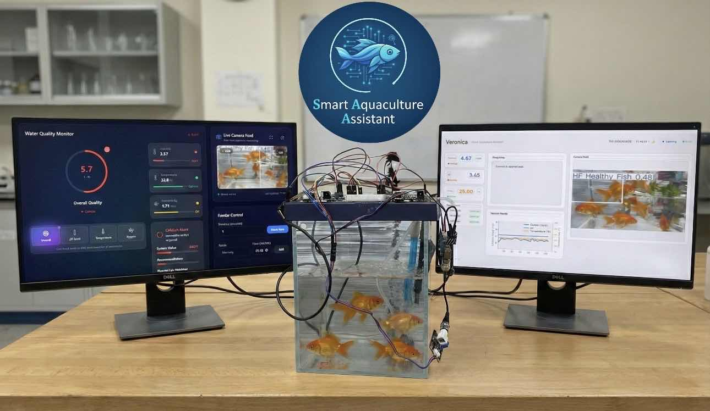
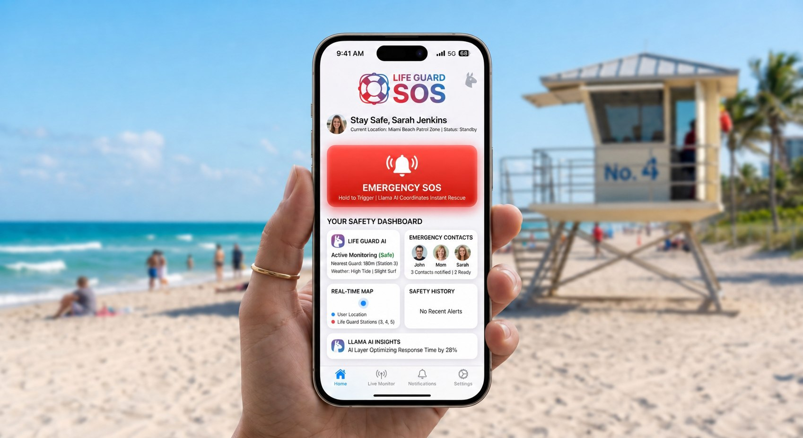

AI Chatbot with Vision
A real-time visual assistant combining Llama and OpenCV — passing live frames to a multimodal model so the assistant can understand and respond to its surroundings.
Engineering builds across computer vision, biometric security, and applied AI systems.
A real-time visual assistant combining Llama and OpenCV — passing live frames to a multimodal model so the assistant can understand and respond to its surroundings.

Real-time detection with YOLOv8 and InsightFace, matching 512-dimensional face embeddings against a database and triggering automated identification alerts.

An AI-integrated aquaculture management system designed to monitor fish tanks with sensors and vision models to help operators make faster decisions.

An iOS safety application with a Llama-powered AI layer, designed to make emergency assistance faster and more accessible when every second matters.
A C++ and OpenCV program that trains facial models and recognizes multiple target faces for identity matching and surveillance scenarios.
Core technologies and research toolsets used across production and academic work.
OpenCV · YOLOv8 · InsightFace · ArcFace · Object Detection · Face Recognition
TensorFlow · Deep Learning · Generative AI · Prompt Engineering · Model Evaluation
Python · C++ · Java · Swift · Git · Linux · REST APIs · Web Prototyping
Project Management · Quality Assurance · Benchmarking · Team Leadership